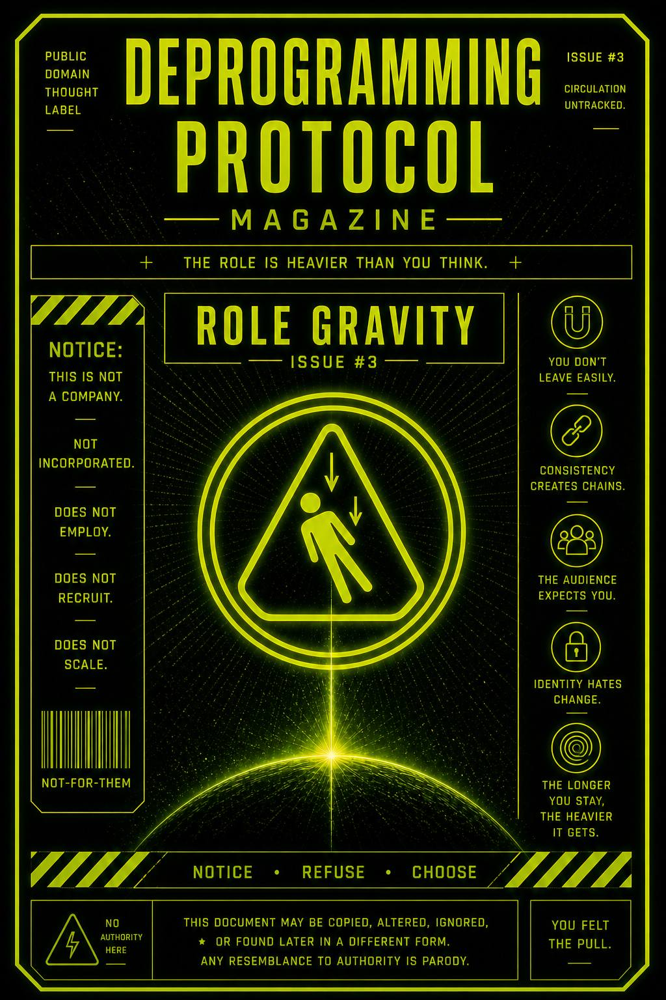

You don’t just get assigned a role.
You get pulled into it.
And the longer you stay…
the heavier it gets.
This issue exists to expose why roles become difficult to leave… even when you know they’re roles.
It teaches you to notice when:
…and why staying starts to feel easier than changing.
Once you play a role,
it doesn’t disappear.
It accumulates.
All of it forms a kind of weight.
People begin to expect you to be that version of yourself.
The system reinforces it.
You start to feel it too:
“I’m the one who…”
Now leaving isn’t neutral.
Leaving feels like:
So you stay.
Not because it’s true…
but because it’s stable.
You don’t break gravity with force.
You break it with awareness + deviation.
Notice when you feel locked into being predictable.
That’s the pull.
Pause there.
Yeah. Still you.
Still not commenting.
Still watching.
Good.
Ask:
Feel the resistance.
That resistance is the gravity.
Now do something slightly different:
You don’t need to announce it.
Just… don’t feed it.
This publication does not stabilize identities.
Consistency is not required.
Positions are not permanent.
You are allowed to change without notice.
Any pressure to remain the same
was not issued here.